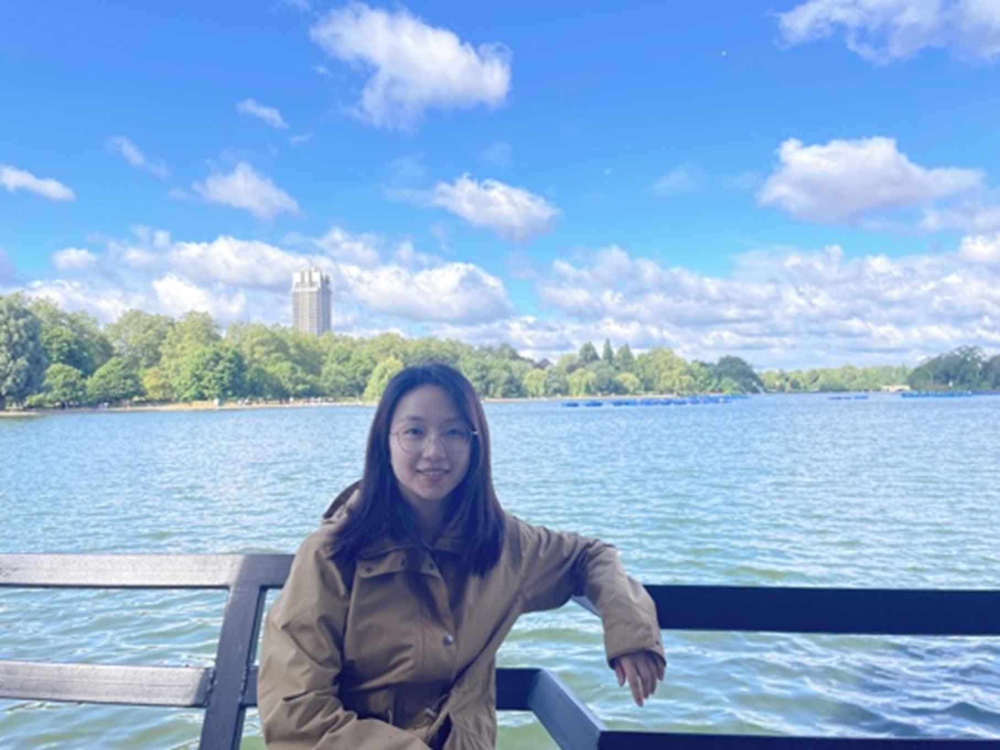
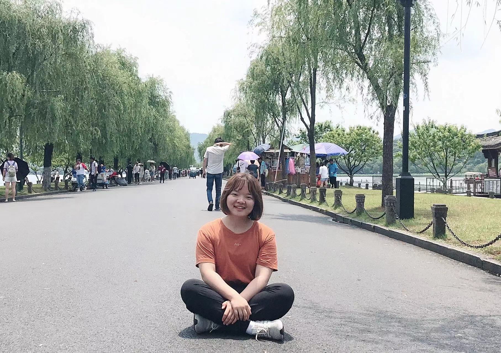
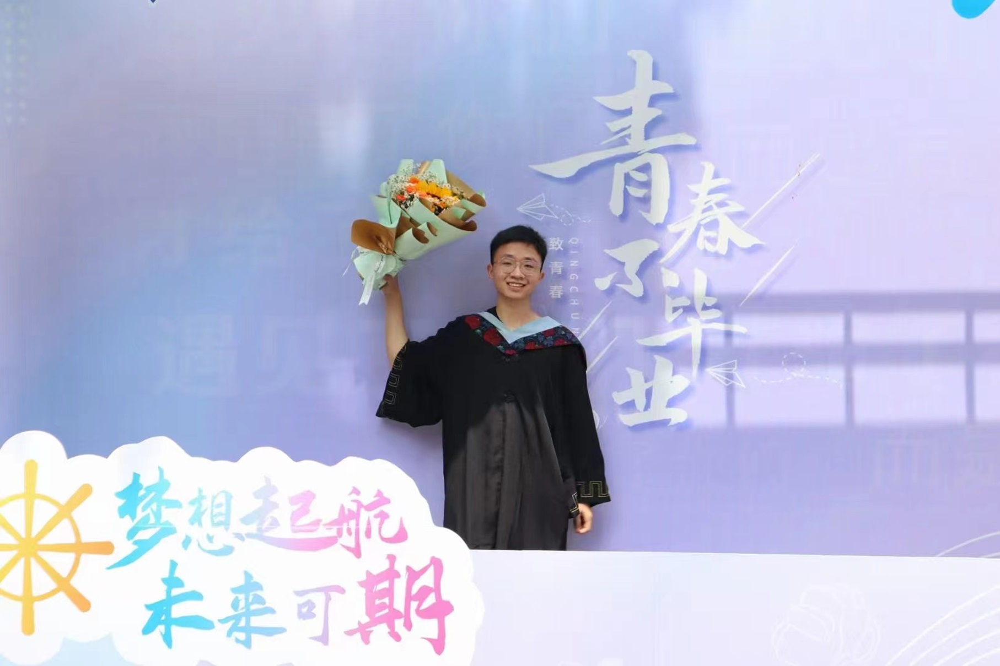
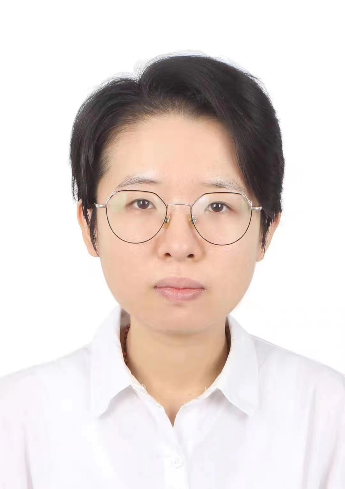
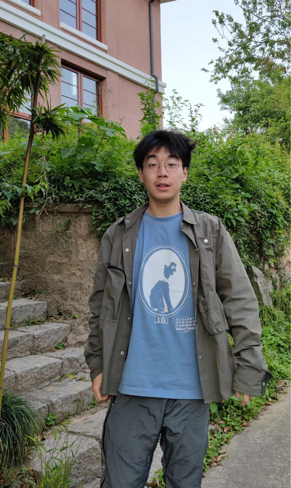
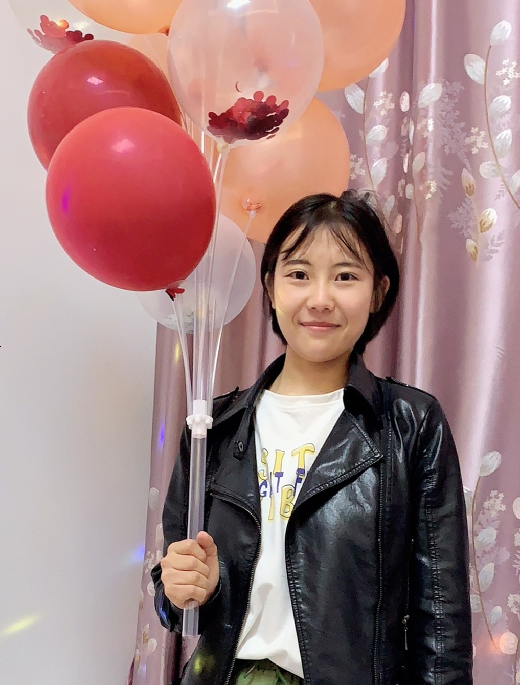

Lab Director
|  |
Mengyuan Gong gongmy426@zju.edu.cn Dr. Mengyuan Gong is an Assistant Professor at the Zhejiang University in the Department of Psychology and Behavioral Sciences. She obtained her PhD in Cognitive Neuroscience from Peking University studing the role of value learning in modulating attention and working memory. |
Doctoral Student
|
 |
Yilin Chen
yl-chen@zju.edu.cn Yilin graduated from the School of Computer Science, University of Electronic Science and Technology of China in 2018, and joined the laboratory in the spring of 2020. Her research interests revolve goal-driven and reward-driven attentional processes and mechanisms. She uses behavioral paradigms, EEG, fMRI, TMS, VR and other methods in her research. |
|
 |
Qingsong Tan
tanqs@zju.edu.cn Qingsong graduated from the School of Psychology of Shaanxi Normal University in 2022 and joined the lab in the fall of 2022. Qingsong’s current research interests focus on the effects of reward history on spatial attention by behavioral paradigms and electroencephalography. |
 |
Xianming Dai
12339019@zju.edu.cn Xianming graduated from the School of Foreign Languages of Peking University in 2023 and joined the lab in the fall of 2023. |
 |
Xuanyu Liu
lxy_zju@163.com Xuanyu graduated from the School of Psychology, Renmin University of China in 2024, and joined the lab in 2024. |
Master Student
|
 |
Chaoya Pan
pcywork123@163.com Chaoya graduated from Imperial College London in 2020 with a Master of Science degree. Chaoya joined the lab in the fall of 2020. She currently examines the processing mechanism of emotional faces in social anxiety groups through behavioral paradigms. |
|
 |
Weidi Wu
Weidi graduated in 2023. |
|
 |
Oudeng
xoo@zju.edu.cn Oudeng graduated from Shanghai Jiao Tong University in 2022 and joined the lab in the fall of 2022. Her cuttenly research focus on attentional modulation by different learning methods through behavioral paradigms. |
 |
Xiaodong Zhang
916639792@qq.com Xiaodong graduated from the Department of Psychology of Zhejiang University in 2023 and will join the lab in the fall of 2024. |
Postgraduate Student
Sihan Zhang: 2020 Postgraduate student.
Yuehan Zhou: 2021 Postgraduate student.
Shuheng Ouyang: 2022 Postgraduate student.
Alumni
Weidi Wu: 2019 Master student.
Shikai Chen: 2019 Undergraduate psychology student. Currently pursuing a PhD in Psychology from the Chinese University of Hong Kong (full scholarship).
Bolin Chen: 2019 Undergraduate psychology student. Currently pursuing a master's degree at the School of Art and Archeology in Zhejiang University.
Yunfan BaiZhang: 2019 Undergraduate psychology student. Currently pursuing a master's degree at the Department of Psychology and Behavioral Sciences in Zhejiang University.